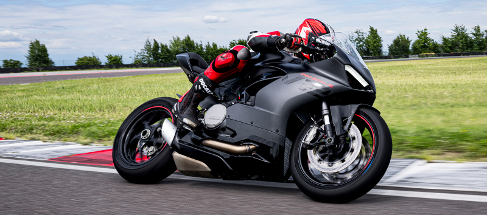
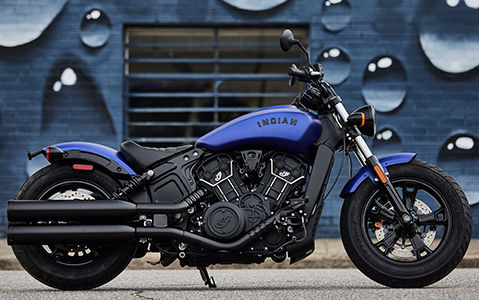

.jpg)
Top 10 Motorcycles to own
1. Harley Davidson 1200 custom
.jpg)
The Harley Davidson 1200 custom is a excellent bike for both beginners and experienced riders. The 1200 custom offers a sleek design, comfortable ride, and v-twin engines that sound like music.
2. Ducati Panigale V2

Now when it comes to performance The Ducati Panigale V2 is a great choice . The panigale V2 is powered by 955 cc air-cooled engine which can reach speeds up 180mph. The Panigale is a perfect bike for racers or collectors.
3. Kawasaki H2

The Kawasaki H2 is not only beautiful but extremely powerful. With the 998cc inline four-cylinder engine the speeds of this bike can easily reach 200mph +.
4 The Indian Scout bobber sixty

The Indian Scout Bobber Sixty is a stripped-down, lightweight cruiser powered by a liquid-cooled, 999cc V-twin engine that produces 78 horsepower. Its minimalist design features a low-slung profile, chopped fenders, and blacked-out details, giving it a bold, aggressive look. With a five-speed transmission and a low seat height of 25.6 inches, it's designed for easy handling and urban performance.
5 Harley Davison Dyna Super Glide Sport